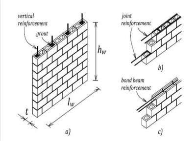
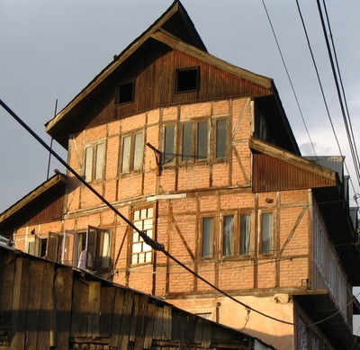
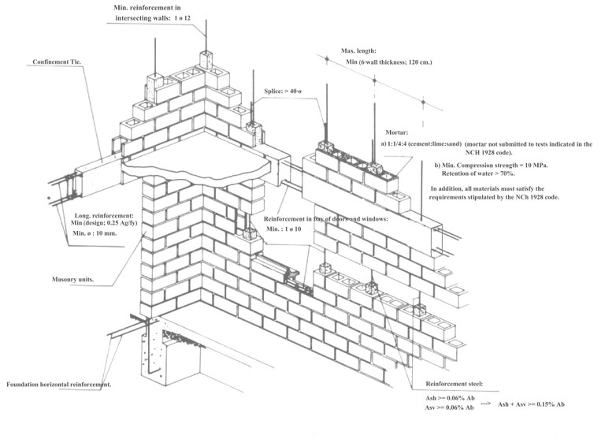

Masonry, reinforced [MR]
Masonry wall construction in which reinforcement is embedded in such a manner that two materials act together in resisting forces. The reinforcement resists tension while the masonry resists compression. Reinforcement can take various forms, such as internal steel or wooden rods or bars grouted into masonry units or laid in horizontal mortar courses. Alternatively, vertical and/or horizontal wood or reinforced concrete posts or bands can be provided to increase the strength of individual building elements like walls and or tie them together. In some cases, textile reinforcing which is plastered over is used to reinforce masonry walls.


Reinforced masonry construction using concrete block masonry and steel reinforcement, Canada (left: B. McEwen; right: Anderson and Brzev, 2009)

Wood-reinforced brick masonry known as Dhaji Dhewari in Kashmir, India (S. Brzev)

Adobe walls reinforced with a polymer mesh (geogrid) attached to the walls by plastic or nylon strings, Peru (N. Tarque)

Detail of an adobe wall reinforced with polymer mesh, Peru (A. Charleson)

Reinforced concrete block masonry, New Zealand - note vertical reinforcing bars placed in hollow cores (A. Charleson)

Reinforced clay block masonry, Chile (S. Brzev)

Typical reinforcement arrangement, Chile (Moroni, Gomez, and Astroza, World Housing Encyclopedia Report 5)